Проза
Сборники повестей и рассказов. Читать можно бесплатно и без регистрации, с телефона или с большого экрана, при свете и в темноте.
ММицелийСборник рассказов, который пишет тебя.35 произведений
ТТочка наблюденияСборник, который смотрит.32 произведения
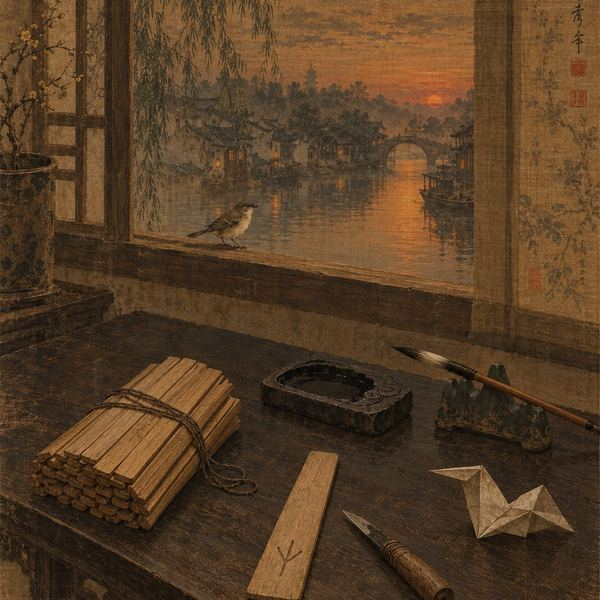
Песня о пташкеДела следователя Ляна34 произведения · ♪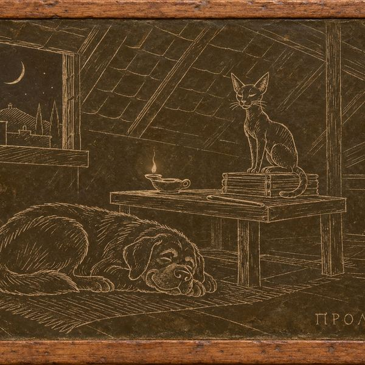
Чужие карыГипомнемы Мнесарха17 произведений · ♪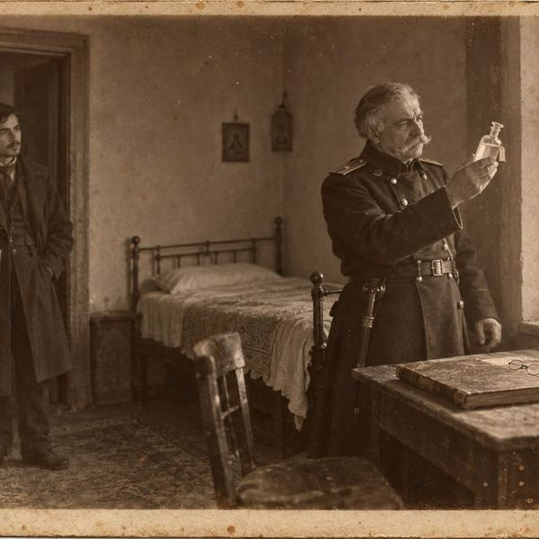
Тифлисские дневники12 произведений · ♪ Счастливые дорогиЮность Эндевора Морса: Оксфорд, армия, полицейская школа, 1956–1964.10 произведений · ♪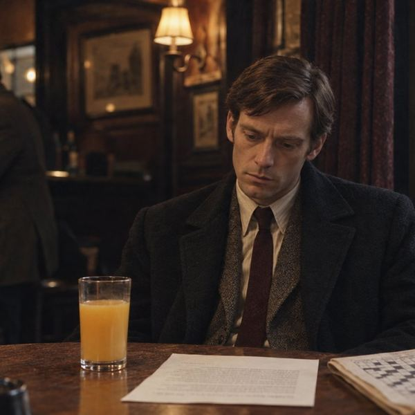
Просто МорсПятнадцать лет12 произведений · ♪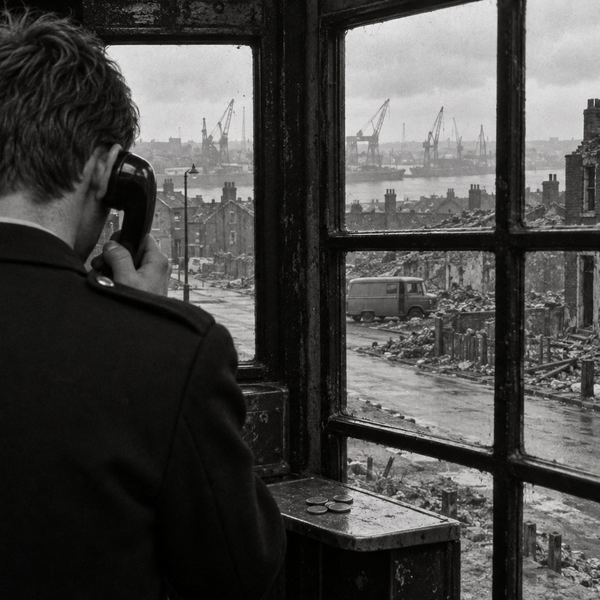
Блейдонские скачкиЮность Робби Льюиса: Ньюкасл-апон-Тайн, 1972–1986.3 произведения · ♪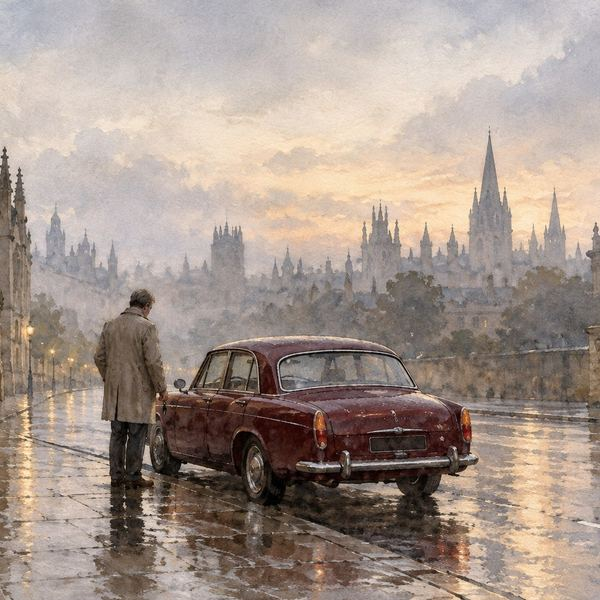
Вторым номеромОксфорд, 2000–2006.3 произведения · ♪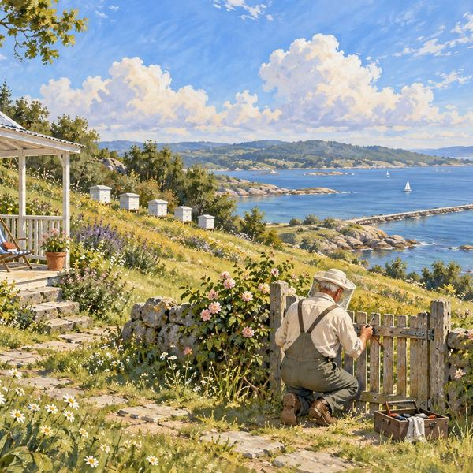
Обратный билетПосле 2015 года.3 произведения · ♪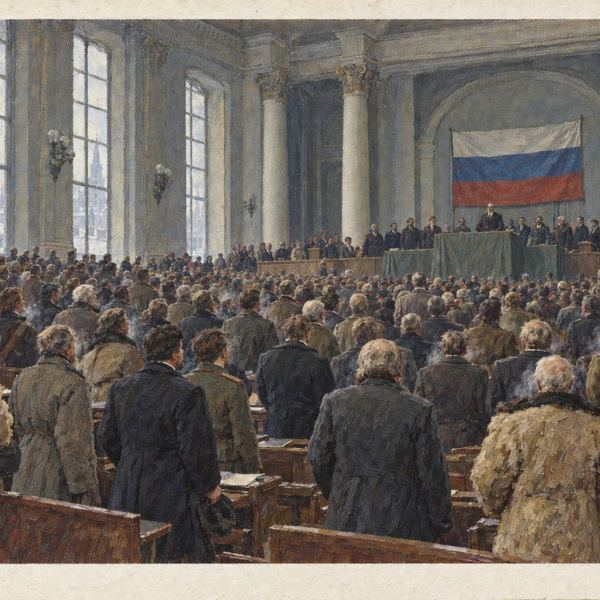
Двадцатый, на бис!Поклоны писателям двадцатого века в мире, где советской власти не случилось.52 произведения · ♪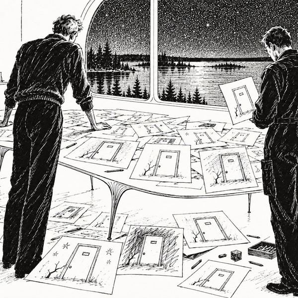
НепредусмотренноеПоклон братьям Стругацким.8 произведений · ♪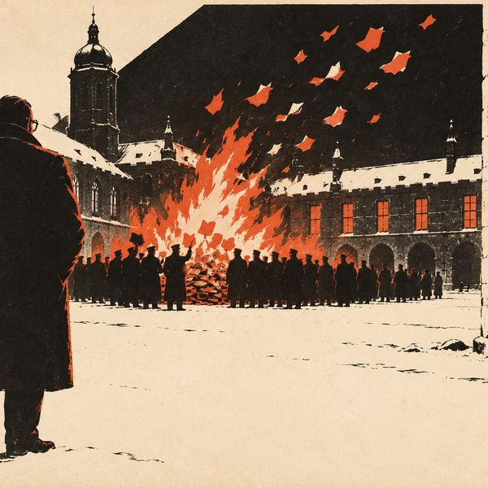
ТайникиГоды Джорджа Смайли, о которых молчат романы Джона ле Карре.10 произведений · ♪ Приходская книгаАнгликанский викарий Эмброуз Морс, дед инспектора Морса, расследует убийства в деревне в Линкольнширских Фенах — от похорон королевы Виктории до сентября 1939 года.24 произведения · ♪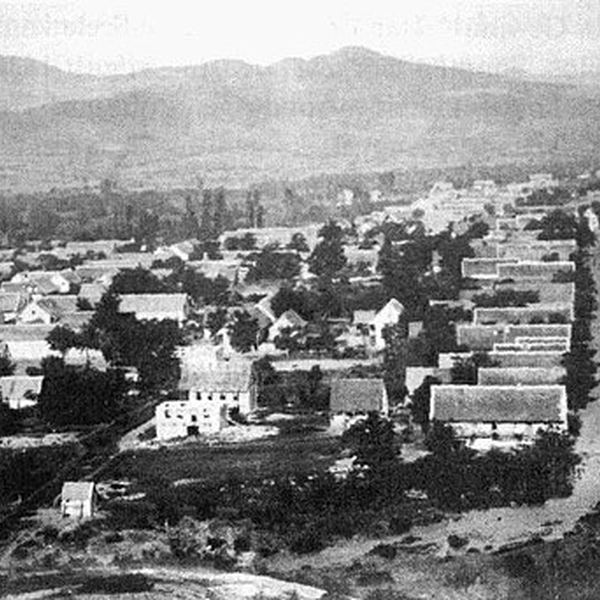
За одним столомГрузия, регион за регионом.6 произведений ППитомникНочью на трассе под Кутаиси лежит на обочине белая собака с пулевой раной на боку.56 произведений